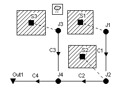
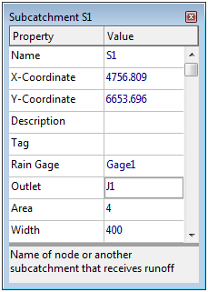
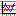

Introduction
This tutorial provides an introduction to using EPA SWMM, Version 5, for modeling the quantity and quality of stormwater runoff produced from urban areas. The topics to be covered include:
- Project Setup
- Constructing a SWMM Model
- Setting the Properties of SWMM Objects
- Saving and Opening Projects
- Running a Single Event Analysis
- Viewing Simulation Results
- Simulating Runoff Water Quality
- Running a Continuous Simulation
Example Study Area
In this tutorial we will model the drainage system serving a 12 acre residential area. The system layout is shown below and consists ofsubcatchment areas S1 through S3 Note, storm sewer conduits C1 through C4, and conduit junctions J1 through J4. The system discharges to a creek at the point labeled Out1. We will first go through the steps of creating the objects shown in this diagram on SWMM's Study Area Map and setting the various properties of these objects. Then we will simulate the water quantity and quality response to a 3-inch, 6-hour rainfall event, as well as a continuous, multi-year record.

You can click the View Map button that appears in each topic's header panel to refer to this drawing at any time. Use the [button_next] button to move to the next topic, the [button_prev] button to return to the previous topic, and the [button_main] button to return to the start of the tutorial. Side notes have been added to many of the topics that describe additional features of EPA SWMM. These can be viewed in a pop-up window by clicking on the word Note where it appears.
Study Area map
Project Setup
Our first task is to create a new project in EPA SWMM and make sure that certain default options are selected. Using these defaults will simplify the data entry tasks later on.
- Launch EPA SWMM if it is not already running and select File | New to create a new project.
- Select Project | Defaults to open the Project Defaults dialog.
- On the ID Labels page, set the ID Prefixes as follows (leave the others blank):
| Rain Gages: | Gage |
| Subcatchments: | S |
| Junctions: | J |
| Outfalls: | Out |
| Conduits: | C |
| ID Increment: | 1 |
This will make EPA SWMM automatically label new objects with consecutive numbers following the designated prefix.
- On the Subcatchments page of the dialog set the following default values:
| Area: | 4 |
| Width: | 400 |
| % Slope: | 0.5 |
| % Imperv: | 50 |
| N-Imperv: | 0.01 |
| N-Perv: | 0.10 |
| Dstore-Imperv: | 0.05 |
| Dstore-Perv: | 0.05 |
| Zero-Imperv: | 25.0 |
| Infil. Model <click to edit> | |
| Method: | Modified Green-Ampt |
| Suction Head: | 3.5 |
| Conductivity: | 0.5 |
| Initial Deficit: | 0.26 |
- On the Nodes/Links page set the following default values:
| Node Invert: | 0 |
| Node Max. Depth: | 4 |
| Conduit Length: | 400 |
| Conduit Geometry: <click to edit> | |
| Shape: | Circular |
| Max. Depth: | 1.0 |
| Barrels: | 1 |
| Conduit Roughness: | 0.01 |
| Flow Units: | CFS |
| Link Offsets: | DEPTH |
| Routing Model: | Kinematic Wave |
- Click OK to accept these choices and close the dialog. Note.
Setting Map Options
Next we will set some map display options so that ID labels and symbols will be displayed as we add objects to the study area map, and links will have direction arrows.
- Select Tools | Map DisplayOptions to bring up the Map Options dialog.
- Select the Subcatchments page, set the Fill Style to Diagonal and the Symbol Size to 5.
- Then select the Nodes page and set the Node Size to 5.
- Select the Annotation page and check off the boxes that will display ID labels for Subcatchments, Nodes, and Links. Leave the others un-checked.
- Finally, select the Flow Arrows page, select the Filled arrow style, and set the arrow size to 7.
- Click the OK button to accept these choices and close the dialog.
Before placing objects on the map we should set its dimensions.
- Select View | Dimensions to bring up the Map Dimensions dialog.
- You can leave the dimensions at their default values for this example.
Finally, look in the status bar at the bottom of the main window and check that the Auto-Length feature is off. If it is on, then click the down arrow button and select "Auto-Length: Off" from the popup menu that appears. Also make sure that the Offsets option is set to Depth. If set to Elevation then click the down arrow button and select "Depth Offsets" from the popup menu that appears.
Drawing the Drainage Area Subcatchments
We are now ready to begin adding components to the Study Area Map. We will start with the subcatchments. Remember that you can click the View Map button of this tutorial at any time to see how we want our map to look eventually. Note[^1]
- Begin by selecting the Subcatchments category (under Hydrology) in the Project Browser panel (on the left side of the main window).
- Then click the
 button on the toolbar underneath the object category listing in the Project panel (or select Project | Add a New Subcatchment from the main menu). Notice how the mouse cursor changes shape to a pencil when you move it over the map.
button on the toolbar underneath the object category listing in the Project panel (or select Project | Add a New Subcatchment from the main menu). Notice how the mouse cursor changes shape to a pencil when you move it over the map. - Move the mouse to the map location where one of the corners of subcatchment S1 lies and left-click the mouse.
- Do the same for the next three corners and then right-click the mouse (or hit the Enter key) to close up the rectangle that represents subcatchment S1. You can press the Esc key if instead you wanted to cancel your partially drawn subcatchment and start over again. Don't worry if the shape or position of the object isn't quite right. We will go back later and show how to fix this.
- Next move the mouse to subcatchment S2's location and draw its outline. Then repeat for subcatchment S3. Note[^2]
Observe how sequential ID labels are generated automatically as we add objects to the map.
[1] Drawing objects on the map is just one way of creating a project. For large projects is will be more convenient to first construct an EPA SWMM project file external to the program. The project file is a text file that describes each object in a specified format as described in the Users Manual. Data extracted from various sources, such as CAD drawings or GIS files, can be used to create the project file.
[2] If you right-click (or press Enter) after adding the first point of a subcatchment's outline, the subcatchment will be shown as just a single point.
Drawing the Drainage System Nodes
Next we will add in the junction nodes and the outfall node that comprise part of the drainage network.
- To begin adding junctions, select the Junctions category from the Project Browser (under Hydraulics -> Nodes) and click the button or select Project | Add a New Junction from the main menu.
- Move the mouse to the position of junction J1 and left-click it. Do the same for junctions J2 through J4.
- To add the outfall node, select Outfalls from the Project Browser, click the button or select Project | Add a New Outfall from the main menu, move the mouse to the outfall's location on the map, and left-click. Note how the outfall is automatically given the name Out1.
Drawing the Drainage System Links
Now we will add the storm sewer conduits that connect our drainage system nodes to one another. (You must have created a link's end nodes as described in the previous topic before you can create the link.) We will begin with conduit C1 which connects junction J1 to J2.
- Select the Conduits from the Project Browser (under Hydraulics -> Links) and press the button or select Project | Add a New Conduit from the main menu. The mouse cursor will change shape to a cross hair when moved onto the map.
- Left click the mouse on junction J1. Note how the mouse cursor now changes shape to a pencil.
- Move the mouse over to junction J2 (note how an outline of the conduit is drawn as you move the mouse) and left-click to create the conduit. You could have canceled the operation by either right-clicking or by hitting the Esc key.
Repeat steps 2 and 3 for conduits C2 through C4. Note[^1]
[1] Although all of our conduits were drawn as straight lines, it is possible to draw a curved link by left-clicking at intermediate points where the direction of the link changes before clicking on the end node.
Adding a Rain Gage
To complete the construction of our study area schematic we need to add a rain gage.
- Select the Rain Gages category from the the Project Browser panel (under Hydrology) and either click the button or select Project | Add a New Rain Gage from the main menu.
- Move the mouse over the Study Area Map to where the gage should be located and left-click the mouse.
Re-Positioning Objects
At this point we have completed drawing the example study area. Your system should look like the one seen by pressing the View Map button above. If the rain gage, subcatchments or nodes are out of position you can move them around by
- clicking the
 button on the Map Toolbar to place the map in Object Selection mode,
button on the Map Toolbar to place the map in Object Selection mode, - clicking on the object to be moved,
- dragging the object with the left mouse button held down to its new position.
To re-shape a subcatchment's outline:
- With the map in Object Selection mode, click on the subcatchment's centroid (indicated by a solid square within the subcatchment) to select it.
- Then click the button on the Map Toolbar to put the map into Vertex Selection mode.
- Select a vertex point on the subcatchment outline by clicking on it (note how the selected vertex is indicated by a filled solid square).
- Drag the vertex to its new position with the left mouse button held down.
- If need be, vertices can be added to or deleted from the outline by right-clicking the mouse and selecting the appropriate option from the popup menu that appears.
- When finished, click the button to return to Object Selection mode.
This same procedure can also be used to re-shape a link.
Setting Properties
As visual objects are added to our project, SWMM assigns them a default set of properties. To change the value of a specific property for an object we must select the object into the Property Editor (shown below). There are several different ways to do this. If the Editor is already visible then you can simply click on the object or select it from the Project Browser. If the Editor is not visible then you can make it appear by one of the following actions:
| - double-click the object on the map |  |
| - right-click on the object and select Properties from the pop-up menu that appears | |
| - select the object from the Project Browser and then click the Browser's  button. button. |
Whenever the Property Editor has the focus you can press the F1 key to obtain a more detailed description of the properties listed.
Setting Subcatchment Properties
Two key properties of our subcatchments that need to be set are the rain gage that supplies rainfall data to the subcatchment and the node of the drainage system that receives runoff from the subcatchment. Since all of our subcatchments utilize the same rain gage, Gage1, we can use a shortcut method to set this property for all subcatchments at once:
- From the main menu select Edit | Select All.
- Then select Edit | Group Edit to make a Group Editor dialog appear.
- Select Subcatchments as the class of object to edit, Raingage as the property to edit, and type in Gage1 as the new value.
- Click OK to change the rain gage of all subcatchments to Gage1. A confirmation dialog will appear noting that 3 subcatchments have changed. Select No when asked to continue editing.
To set the outlet node of our subcatchments we have to proceed one by one, since these vary by subcatchment:
- Double click on subcatchment S1 or select it from the Project Browser and click the Browser's button to bring up the Property Editor.
- Type J1 in the Outlet field and press Enter. Note how a dotted line is drawn between the subcatchment and the node.
- Click on subcatchment S2 and enter J2 as its Outlet.
- Click on subcatchment S3 and enter J3 as its Outlet.
Finally, we wish to represent area S3 as being less developed than the others. Select S3 into the Property Editor and set its % Imperviousness to 25.
Setting Node/Link Properties
The junctions and outfall of our drainage system need to have invert elevations assigned to them. As we did with the subcatchments, select each junction individually into the Property Editor and set its Invert Elevation to the value shown in the table below. Note[^1]
| Node | Invert |
| J1 | 96 |
| J2 | 90 |
| J3 | 93 |
| J4 | 88 |
| Out1 | 85 |
Only one of the conduits in our example system has a non-default property value. This is conduit C4, the outlet pipe, whose diameter should be 1.5 ft. instead of 1 ft. To change its diameter, select conduit C4 into the Property Editor and set the Max. Depth value to 1.5.
[1] An alternative wau to move from one object of a given type to the next in order (or to the previous one) in the Property Editor is to hit the Page Down (or Page Up) key.
Setting Rain Gage Properties
In order to provide a source of rainfall input to our project we need to set the rain gage properties. Select Gage1 into the Property Editor and set the following properties:
| Rain Format: | INTENSITY |
| Rain Interval: | 1:00 |
| Data Source: | TIMESERIES |
| Series Name: | TS1 |
As mentioned earlier, we want to simulate the response of our study area to a 3-inch, 6-hour design storm. A time series named TS1 will contain the hourly rainfall intensities that make up this storm. Thus we need to create a time series object and populate it with data. To do this:
- From the Project Browser select the Time Series category of objects.
- Click the button on the Browser which will bring up a Time Series Editor form. Note[^1]
- Enter TS1 in the Time Series Name field.
- Enter the following values into the Time and Value columns of the data entry grid (leave the Date column blank): Note[^2]
| 0 | 0 |
| 1 | 0.5 |
| 2 | 1.0 |
| 3 | 0.75 |
| 4 | 0.5 |
| 5 | 0.25 |
| 6 | 0 |
- You can click the View button on the dialog to see a graph of the time series values. Click the OK button to accept the new time series.
[1] The time series editor can also be launched directly from the Rain Gage Property editor by selecting the editor's Series Name field and double clicking on it.
[2] Leaving off the dates for a time series means that SWMM will interpret the time values as hours from the start of the simulation. Otherwise, the time series follows the date/time values specified by the user.
Saving and Opening Projects
Having completed the initial design of our example project it is a good idea to give it a title and save our work to a file at this point. To do this:
- Select the Title/Notes category from the Project Browser and click the button.
- In the Project Title/Notes dialog that appears, enter "Tutorial Example" as the title of our project and click the OK button to close the dialog.
- From the File menu select the Save As option.
- In the Save As dialog that appears, select a folder and file name under which to save this project. We suggest naming the file tutorial.inp. (An extension of .inp will be added to the file name if one is not supplied.)
- Click OK to save the project to file.
The project data is saved to the file in a readable text format. You can view what the file looks like by selecting Project | Details from the main menu. To open our project at some later time, we would select the Open command from the File menu.
Running a Kinematic Wave Analysis
Before analyzing the performance of our example drainage system we need to set some options that determine how the analysis will be carried out. To do this:
- From the Project Browser, select the Options category and click the button.
- On the General page of the Simulation Options dialog that appears, select Kinematic Wave as the flow routing method. The flow units should already be set to CFS and the infiltration method to Green-Ampt. The Allow Ponding option should be unchecked.
- On the Dates page of the dialog, set the End Analysis time to 12:00.
- On the Time Steps page, set the Routing Time Step to 60 sec.
- Click OK to close the Simulation Options dialog.
We are now ready to run the simulation. To do so, select Project | Run Simulation on the main menu (or simply click the button).
Viewing Analysis Results
If there was a problem in running the simulation, a Status Report will appear describing what errors occurred.
Upon successfully completing a run, there are numerous ways in which to view the results of the simulation. We will illustrate just a few here:
- Viewing the Status Report
- Viewing the Summary Report
- Viewing results on the map
- Viewing a time series plot
- Viewing a profile plot
Viewing the Status/Summary Reports
The Status Report contains useful information about the quality of a simulation run, including a mass balance on rainfall, infiltration, evaporation, runoff, and inflow/outflow for the conveyance system. To view the report, select Report | Status (or click the  button on the Main Toolbar and then select Status Report from the drop down menu).
button on the Main Toolbar and then select Status Report from the drop down menu).
For the system we just analyzed the report indicates the quality of the simulation is quite good, with negligible mass balance continuity errors for both runoff and routing (-0.39% and 0.03%, respectively, if all data were entered correctly). Also, of the 3 inches of rain that fell on the study area, 1.75 infiltrated into the ground and essentially the remainder became runoff.
The Summary Report contains tables listing summary results for each subcatchment, node and link in the drainage system. Total rainfall, total runoff, and peak runoff for each subcatchment, peak depth and and hours flooded for each node, and peak flow, velocity, and depth for each conduit are just some of the outcomes included in the summary report.
To view the Summary Report select Report | Summary from the main menu (or click the button on the Main Toolbar and then select Summary Report from the drop down menu). The report's window has a drop down list from which you select a particular report to view. For our example, the Node Flooding Summary table indicates there was internal flooding in the system at node J2. Note[^1] The Conduit Surcharge Summary table shows that Conduit C2, just downstream of node J2, was at full capacity and therefore appears to be slightly undersized.
[1] In EPA SWMM, flooding will occur whenever the water surface at a node exceeds the maximum defined depth. Normally, such water will be lost from the system. The option also exists to have this water pond atop the node and be re-introduced into the the drainage system when capacity exists to do so.
Viewing Results on the Map
Simulation results (as well as some design parameters, such as subcatchment area, node invert elevation, link maximum depth) can be viewed in color-coded fashion on the study area map. To view a particular variable in this fashion:
- Select the Map page of the Browser panel.
- Select the variables to view for Subcatchments, Nodes, and Links from the dropdown combo boxes in the Themes panel.
- The color coding used for a particular variable is displayed with a legend on the study area map. To toggle the display of a legend, select View | Legends.
- To move a legend to another location, drag it with the left mouse button held down.
- To change the color coding and the breakpoint values for different colors, select View | Legends | Modify and then the pertinent class of object (or if the legend is already visible, simply right-click on it).
- To view numerical values for the variables being displayed on the map, select Tools | Map Display Options and then select the Annotation page of the Map Options dialog. Use the check boxes for Rain Gages, Subcatchments, Nodes, and Links to specify what kind of annotation to add.
- The Date / Time of Day / Elasped Time controls on the Map Browser can be used to move through the simulation results in time.
- You can use the controls in the Animator panel of the Map Browser to animate the map display through time. For example, pressing the button will run the animation forward in time.
Viewing a Time Series Plot
To generate a time series plot of a simulation result:
- Select Report | Graph | Time Series from the menu bar or simply click

on the Main Toolbar. - A Time Series Plot Selection dialog will appear. It is used to select the objects and variables to be plotted.
For our example, this dialog can be used to graph the flows in conduits C1 and C2 as follows:
- Select conduit C1 on the map or in the Project Browser and then click the Add button on the dialog.
- A Data Series Selection page will appear. Select Flow as the Variable to plot.
- Click the Accept button to return to the Plot Selection page of the dialog.
- Repeat the above steps for conduit C2 and press OK to create the plot.
After a plot is created you can:
- customize its appearance by selecting Report | Customize or right clicking on the plot,
- copy it to the clipboard and paste it into another application by selecting Edit | Copy To or clicking
 on the Main Toolbar
on the Main Toolbar - print it by selecting File | Print or File | Print Preview (use File | Page Setup first to set margins, orientation, etc.).
Viewing a Profile Plot
SWMM can generate profile plots showing how water surface depth varies across a path of connected nodes and links. Let's create such a plot for the conduits connecting junction J1 to the outfall Out1 of our example drainage system. To do this:
- Select Report | Graph | Profile or simply click
 on the Main Toolbar.
on the Main Toolbar. - Either enter J1 in the Start Node field of the Profile Plot dialog that appears or select it on the map or from the Project Browser and click the button next to the field.
- Do the same for node Out1 in the End Node field of the dialog.
- Click the Find Path button. An ordered list of the links which form a connected path between the specified Start and End nodes will be displayed in the Links in Profile box. You can edit the entries in this box if need be.
- Click the OK button to create the plot, showing the water surface profile as it exists at the simulation time currently selected in the Map Browser.
As you move through time using the Map Browser or with the Animator control, the water depth profile on the plot will be updated. Observe how node J2 becomes flooded between hours 2 and 3 of the storm event.
The appearance of a profile plot can be customized or it can be copied or printed using the same procedures as for a time series plot.
Running a Dynamic Wave Analysis
In the analysis just run we chose to use the Kinematic Wave method of routing flows through our drainage system. This is an efficient but simplified approach that cannot deal with such phenomena as backwater effects, pressurized flow, flow reversal, and non-dendritic layouts. SWMM also includes a Dynamic Wave routing procedure that can represent these conditions. This procedure, however, requires more computation time, due to the need for smaller time steps to maintain numerical stability.
Most of the effects mentioned above would not apply to our example. However we had one conduit, C2, that flowed full and caused its upstream junction to flood. It could be that this pipe is actually being pressurized and could therefore convey more flow than was computed using Kinematic Wave routing. We would now like to see what would happen if we apply Dynamic Wave routing instead.
To run the analysis with Dynamic Wave routing:
- From the Project Browser, select the Options category and click the button.
- On the General page of the Simulation Options dialog that appears, select Dynamic Wave as the flow routing method.
- Click OK to close the form and select Project | Run Simulation (or click the
 to re-run the analysis. Note[^1]
to re-run the analysis. Note[^1]
If you look at the Status Report for this run you will see that there is no longer any flooding and that the peak flow carried by conduit C2 has been increased from 3.52 cfs to 4.04 cfs.
[1] Normally when running a Dynamic Wave analysis, one would also want to reduce the routing time step (on the Time Steps page of the dialog) and perhaps select the Variable Time Step option (on the Dynamic Wave page of the dialog) as well.
Simulating Runoff Water Quality
In the next phase of this tutorial we will add water quality analysis to our example project. SWMM has the ability to analyze the buildup, washoff, transport and treatment of any number of water quality constituents. The steps needed to accomplish this are:
- Identify the pollutants to be analyzed.
- Define the categories of land uses that generate these pollutants.
- Set the parameters of buildup and washoff functions that determine the quality of runoff from each land use.
- Assign a mixture of land uses to each subcatchment area
- Define pollutant removal functions for nodes within the drainage system that contain treatment facilities.
We will now apply each of these steps, with the exception of number 5, to our example project. Note[^1]
[1] Aside from direct runoff, EPA SWMM allows pollutants to be introduced into the nodes of a drainage system through: user defined time series of direct inflows, dry weather inflows, groundwater interflow, or rainfall derived inflow/infiltration.
Adding Pollutants
For this tutorial example we will define two runoff pollutants; total suspended solids (TSS), measured as mg/L, and total Lead, measured in ug/L. In addition, we will specify that the concentration of Lead in runoff is a fixed fraction (0.25) of the TSS concentration. To add these pollutants to our project:
- Under the Quality category in the Project Browser, select the Pollutants sub-category beneath it.
- Click the button to add a new pollutant to the project.
- In the Pollutant Editor form that appears, enter TSS for the pollutant name and leave the other data fields at their default settings.
- Click the OK button to close the Editor.
- Click the button on the Project Browser again to add our next pollutant.
- In the Pollutant Editor, enter Lead for the pollutant name, select ug/L for the concentration units, enter TSS as the name of the Co-Pollutant, and enter 0.25 as the Co-Fraction value.
- Click the OK button to close the Editor.
Adding Land Uses
In SWMM, pollutants associated with runoff are generated by specific land uses assigned to subcatchments. In our example, we will define two categories of land uses: Residential and Undeveloped. To add these land uses to the project:
- Under the Quality category in the Project Browser, select the Land Uses sub-category and click the button.
- In the Land Use Editor form that appears, enter Residential in the Name field and then click the OK button.
- Repeat steps 1 and 2 for the Undeveloped land use category.
Defining Buildup and Washoff Functions
Next we need to define buildup and washoff functions for TSS in each of our land use categories. Functions for Lead are not needed since its runoff concentration was defined to be a fixed fraction of the TSS concentration. Normally, defining these functions requires site specific calibration.
In this example we will assume that suspended solids in Residential areas builds up at a constant rate of 1 pound per acre per day until a limit of 50 lbs per acre is reached. For the Undeveloped area we will assume that buildup is only half as much. For the washoff function, we will assume a constant event mean concentration of 100 mg/L for Residential land and 50 mg/L for undeveloped land. To define these functions for the Residential land use:
- Select the Residential land use category from the Project Browser and click the button.
- In the Land Use Editor dialog, move to the Buildup page.
- Select TSS as the pollutant and POW (for Power function) as the function type.
- Assign the function a maximum buildup of 50, a rate constant of 1.0, a power of 1 and select AREA as the normalizer.
- Move to the Washoff page of the dialog and select TSS as the pollutant, EMC as the function type, and enter 100 for the coefficient. Fill the other fields with 0.
- Click the OK button to accept your entries.
Now do the same for the Undeveloped land use category, except use a maximum buildup of 25, a buildup rate constant of 0.5, a buildup power of 1, and a washoff EMC of 50.
Assigning Land Uses to Subcatchments
The final step in our water quality example is to assign a mixture of land uses to each subcatchment area:
- Select subcatchment S1 into the Property Editor.
- Select the Land Uses property and click the ellipsis button (or press Enter).
- In the Land Use Assignment form that appears, enter 75 for the % Residential and 25 for the % Undeveloped. Then click the OK button to close the dialog.
- Repeat the same three steps for subcatchment S2.
- Repeat the same for subcatchment S3, except assign the land uses as 25% Residential and 75% Undeveloped.
Running a Water Quality Analysis
Before we simulate the runoff quantities of TSS and Lead from our study area, an initial buildup of TSS should be defined so it can be washed off during our single rainfall event. We can either specify the number of antecedent dry days prior to the simulation or directly specify the initial buildup mass on each subcatchment. We will use the former method:
- From the Options category of the Project Browser, select the Dates sub-category and click the button.
- In the Simulation Options dialog that appears, enter 5 into the Antecedent Dry Days field.
- Leave the other simulation options the same as they were for the dynamic wave flow routing we just completed.
- Click the OK button to close the dialog.
Now run the simulation by selecting Project | Run Simulation or by clicking on the Main Toolbar.
When the run is completed, view its Status Report. Note that two new sections have been added for Runoff Quality Continuity and Quality Routing Continuity. From the Runoff Quality Continuity table we see that there was an initial buildup of 47.5 lbs of TSS on the study area and an additional 2.2 lbs of buildup added during the dry periods of the simulation. About 48 lbs were washed off during the rainfall event. The quantity of Lead washed off is a fixed fraction (0.25 times 0.001 to convert from mg to ug) of the TSS as was specified.
If you plot the runoff concentration of TSS for subcatchment S1 and S3 together on the same time series graph you will see the difference in concentrations resulting from the different mix of land uses in these two areas. You can also see that the duration over which pollutants are washed off is much shorter than the duration of the entire runoff hydrograph (i.e., 1 hour versus about 6 hours). This results from having exhausted the available buildup of TSS over this period of time.
Running a Continuous Simulation
As a final exercise in this tutorial we will demonstrate how to run a long term continuous simulation using a historical rainfall record and how to perform a statistical frequency analysis on the results. The rainfall record will come from a file named sta310301.dat which was included with the example data sets provided with EPA SWMM. Note[^1] It contains several years of hourly rainfall beginning in January 1998. The data are stored in the National Climatic Data Center's DSI 3240 format which SWMM can automatically recognize.
To run a continuous simulation with this rainfall record:
- Select the rain gage Gage1 into the Property Editor.
- Change the selection of Data Source to FILE.
- Select the File Name data field and click the ellipsis button (or press the Enter key) to bring up a Windows File Selection dialog.
- Navigate to the folder where the SWMM example files were stored, select the file named sta310301.dat, and click Open to select the file and close the dialog.
- In the Station No. field of the Property Editor enter 310301.
- Select the Options category in the Project Browser and click the button to bring up the Simulation Options form.
- On the General page of the form, select Kinematic Wave as the Routing Method (this will help speed up the computations).
- On the Dates page of the form, set both the Start Analysis and Start Reporting dates to 01/01/1998, and set the End Analysis date to 01/01/2000.
- On the Time Steps page of the form, set the Routing Time Step to 300 seconds.
- Close the Simulation Options form by clicking the OK button and start the simulation by selecting Project | Run Simulation (or by clicking on the Main Toolbar).
[1] The example data sets can be found in My Documents | EPA SWMM Projects | Sample Projects
Performing a Frequency Analysis
After our continuous simulation is completed we can perform a statistical frequency analysis on any of the variables produced as output. For example, to determine the distribution of rainfall volumes within each storm event over the two-year period simulated:
- Select Report | Statistics or click the
 button on the Main Toolbar.
button on the Main Toolbar. - In the Statistics Selection form that appears, enter the values as shown below:
| Object Category: | System |
| Variable Analyzed: | Precipitation |
| Event Time Period: | Event-Dependent |
| Statistic: | Total |
| Event Thresholds: | |
| Rainfall | 0 |
| Event Volume | 0 |
| Inter-Event Hours | 6 |
This will identify the rainfall volume from each event which is separated by 6 or more hours without rainfall.
- Click the OK button to close the form.
The results of this request will be a Statistics Report form containing four tabbed pages: a Summary page, a page containing a rank-ordered listing of each event, a page containing a histogram of the occurrence frequency versus event magnitude, and a Frequency Plot page that plots event magnitude versus cumulative frequency.
The Summary page shows that there was a total of 213 rainfall events. The Events page shows that the largest rainfall event had a volume of 3.35 inches and occurred over a 24- hour period. There were no events that matched the 3-inch, 6-hour design storm event used in our previous single-event analysis which had produced some internal flooding. In fact, the status report for this continuous simulation indicates that there were no flooding or surcharge occurrences over the simulation period.
Other Features to Explore
We have only touched the surface of SWMM's capabilities. Some additional features of the program that you will find useful include:
- utilizing additional types of drainage elements, such as storage units, flow dividers, pumps, and regulators, to model more complex types of systems
- using control rules to simulate real-time operation of pumps and regulators
- employing different types of externally-imposed inflows at drainage system nodes, such as direct time series inflows, dry weather inflows, and rainfall-derived inflow/infiltration
- modeling groundwater interflow between aquifers beneath subcatchment areas and drainage system nodes
- modeling snow fall accumulation and melting within subcatchments
- adding calibration data to a project so that simulated results can be compared with measured values
- utilizing a background street, site plan, or topo map to assist in laying out a system's drainage elements and to help relate simulated results to real-world locations.
You can find more information on these and other features in the SWMM User's Manual.
HAPPY SWMMING!